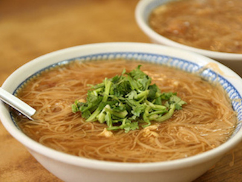

麵線糊
麵線糊也是台灣傳統的主食之一，最初是由廈門的麵線糊改良而來，用上等麵粉製成，質地潔白纖細。然而台灣的麵線又與廈門不同，是拿白麵線蒸過之後而成的，蒸過的白麵線會變紅色，Ｑ度減少但耐煮性增加，可說是紅麵線是台灣的老祖先所發明，全世界只有台灣有！台灣早期的農業社會，麵線糊是當時的主婦烹煮給農耕者的點心，因應多人共同耕田的模式，通常將麵線煮成一大鍋。
麵線羹後來傳到台灣各地，依當地特產的差異，加入大腸、肉羹、蚵仔等不同材料，這也是我們在南部常吃到蚵仔麵線，在北部較常吃到大腸麵線的原因。而鹿港靠海，所以丟入蚵仔來補充營養，就演變成蚵仔麵線。而正由於鹿港是蚵的產地，蚵仔粒大味美，肉質飽滿蘊含水分，因此這地區的蚵仔麵線最為好吃！
